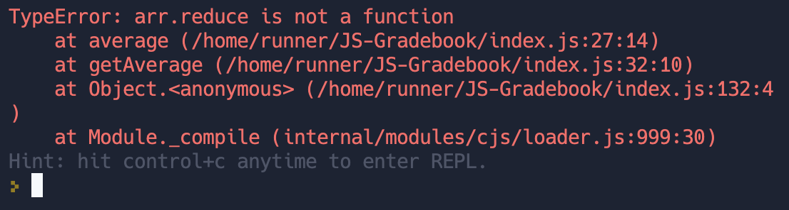
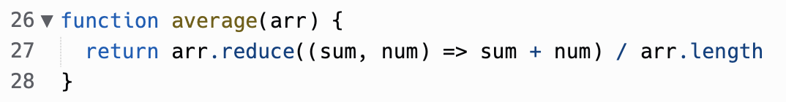
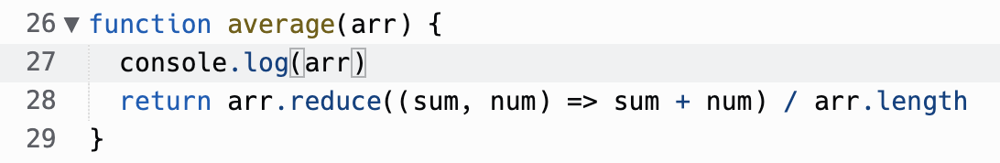
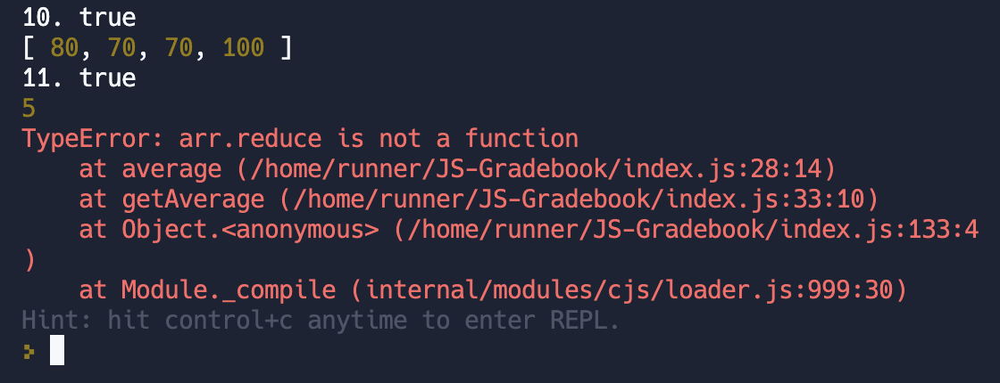
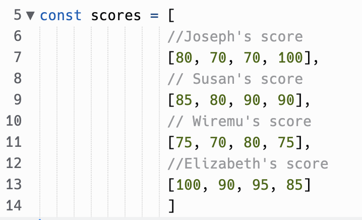
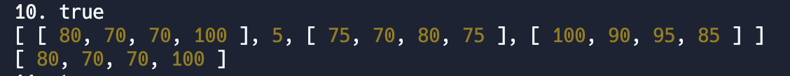
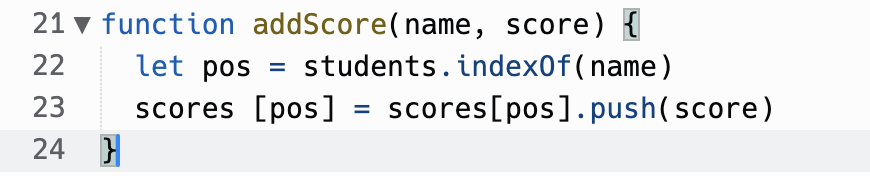
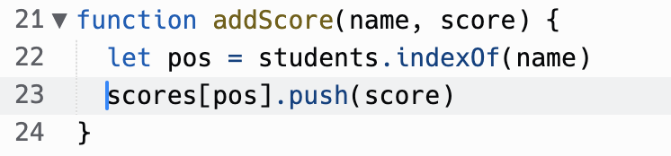
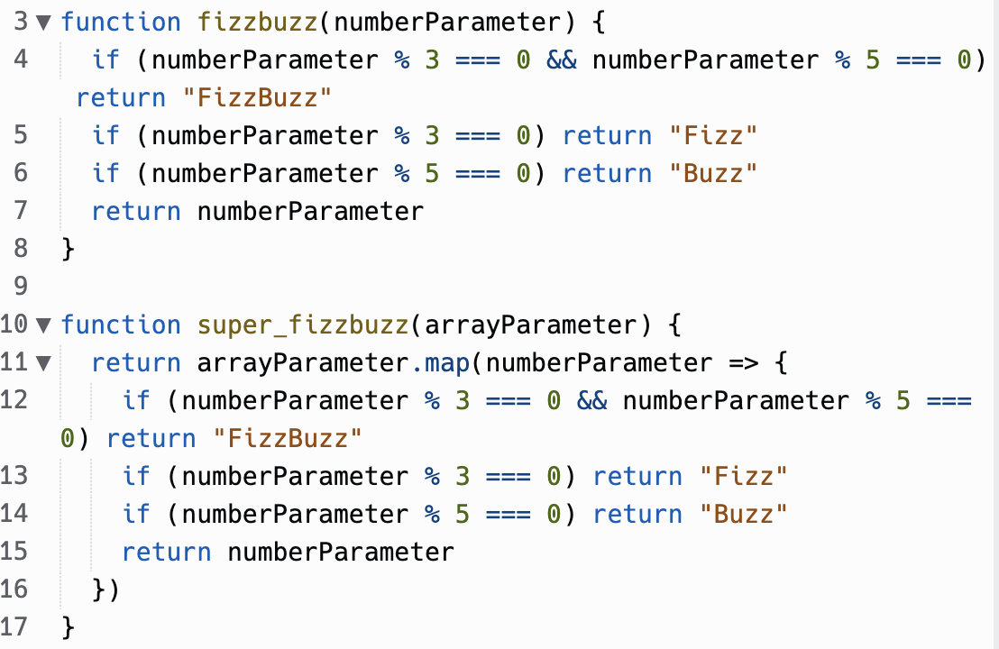
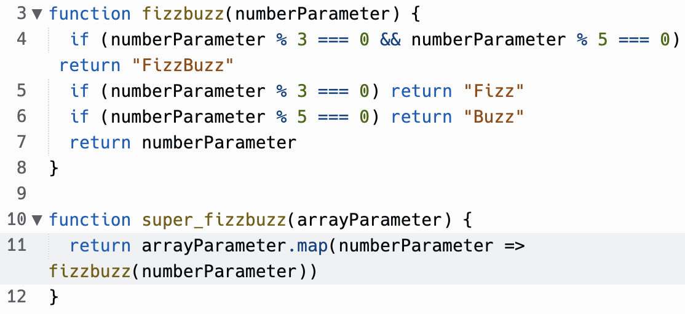

In this blog I'm going to share some reflections on problem solving. I'll use the kata problems we did in Sprint 4 as examples.
getting blocked
I ran into a bit of a block while doing the JS-Gradebook problem. Everything was going fine for a while, until I got near the end of the problem and came up with an error.
Reading the error message, I could see that the problem was with the "average" function. So I had a look.
I checked the syntax and everything looks fine. It had also run OK with the previous test when it averaged the first set of scores in the score array.
Why did it work for the first set and not now???
I thought I'd better console.log the array to see why it wasn't able to reduce.
 The array was the number 5! This was odd because the scores were initialised as an array of arrays.
I thought I'd better console.log the scores array to see what was going on...
The second entry in the array had been replaced with the number 5. I thought about this for a second and remembered I had modified the array in an earlier function.
Aha! I had assigned the second entry of the array with the return value of the push function. I remembered that push doesn't return the modified array...it modifies the array and returns the length of the new array. That's why I had a 5 there instead of the expected array!
I fixed this up and....
This puzzled me at first, because it seemed like the function that was throwing the error was all good. I was surprised that it didn't work!
I learnt the benefit of going straight to the console.log before getting too indignant at the error message.
elegantly solving a problem
This is an example of using problem solving to elegantly solve a problem. I'm going to use the example of the super-fizzbuzz problem. This is a problem that I was able to work through without much issue. I completed the kata with everything working and moved on to the next one.
When I was thinking of what to write for this blog, I remembered the solution I had given. I thought at the time that I was very smart for realising the super_fizzbuzz function could be completed by copying the logic I had used for the fizzbuzz function.
Then I remembered the old DRY principle and realised I could make this more elegant by calling the function, rather than copying it.
With a bit of reflection I was able to make the function more elegant.
This taught me to slow down and use reflection to write better code.
reflection techniques and processes
pseudocode
Writing pseudocode is a great way to approach a problem. By writing down the steps in simple language you can see all the steps you need to take before you start writing any code. Doing this at the beginning of a problem allows you to look at the big picture, before you get bogged down with syntax and error messages.
trying something
Trying something is a good way to gain confidence in your abilities as a programmer. It can be easy to not trust yourself to know the proper syntax and go back to the docs to check before you see if it works. However, this can lead to a dependency on the docs and will slow down your learning of the syntax. Next time you use a method, before you go check out the docs, give it a go and see if it works.
rubber ducky method
The Rubber Ducky Method is a problem solving technique where you pick an object (such as a rubber ducky) and explain the problem to them. By verbalising the problem, you will often come to the solution.
reading error messages
This is very important. Error messages might look like weird computer information dumps most of the time, but many times they actually contain the solution to the problem. Learning to read error messages is a very important skill. You can also use the error messages and codes to search on sites like StackOverflow and see what other people have done.
console.logging
Console.logging is usually the first thing I will do whenever something isn't working. Seeing what the parameters in a function are when it breaks can usually make the solution quite obvious. The console log has many useful functions that can make logging more useful. Console logs can even be styled with CSS!
googling
Googling a problem can be a good way to find a solution, but be careful! You can waste a lot of time trawling through message boards when you could've solved the problem yourself with some console logs and a bit of reflection. Avoid copy and pasting solutions as you'll probably end up with a lot of junk code you don't really understand. I find Googling is a good way to find more information on things like error messages.
asking your peers for help
Asking a peer for help can be a great way to solve a problem. They will have a fresh perspective to the problem or may have approached it in an entirely different way. Seeing a different path to solve a problem can help you out of a rut.
asking coaches for help
Coaches will have a much clearer idea of the problem than you. They have likely seen many students struggle with the same things and can offer helpful advice on how to solve a problem.
improving your process with reflection
Reflection is a great way to solve a problem. Sometimes you might need to take a few minutes away from the computer and just clear your mind. Other times you may need to let a problem ruminate in your mind over a couple of nights before you find the inspiration to solve it.
how do i solve problems?
Usually when I come across a problem in code, I will go through the following steps:
- Look at the error message and try understand it.
- Find the line number that has thrown the error and see if there are any obvious mistakes in syntax.
- Add in console logs and run the program again.
- Google the error message or the process and look through messages on StackOverflow or other websites.
- If I still don't know what's going on, take a break and reflect.